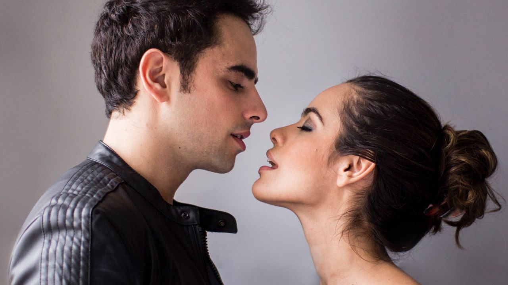
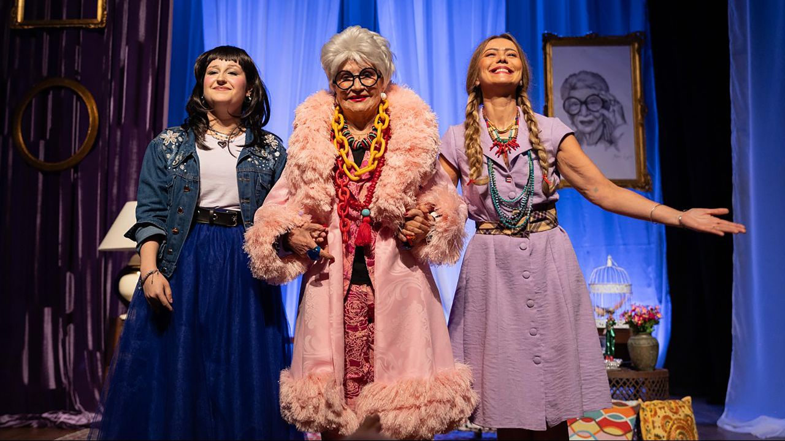

Foto: Divulgação
Foto: DivulgaçãoA semana em que Oz desembarcou no Rio
Nesta edição
- 3Carta ao leitor: por que uma revista?Editorial
- 4Com Myra Ruiz e Fabi Bang, "Wicked" faz temporada carioca na Cidade das…A semana · Teatro
- 8Recortes: o que disseram na semanaEntre aspas
- 9“Festa no Arraial, O Musical” transforma Shakespeare em festa junina no…A semana · Teatro
- 14Na tela: os programas da semanaYouTube do FOYER
- 15Luisa Thiré apresenta “Valsa Nº 6”, de Nelson Rodrigues, no Teatro Arena B3A semana · Teatro
- 19"Os Últimos 5 Anos” volta a São Paulo em edição comemorativa pelos 25 anos…A semana · Teatro
- 23Rosamaria Murtinho vive Iris Apfel em “Uma Vida em Cores” no Teatro VannucciA semana · Teatro
- 27A semana em cartaz: São PauloAgenda
- 28A semana em cartaz: Rio de JaneiroAgenda
- 29Entre mestres: a arte pela palavraExclusivo
- 30ExpedienteQuem faz o FOYER
- 31Na próxima ediçãoContracapa
Carta ao leitor: por que uma revista?
O FOYER nasceu da urgência: a notícia de hoje, a crítica da estreia, a agenda que não espera. Esta revista nasce do movimento contrário. Uma vez por semana, paramos, escolhemos e fechamos uma edição com começo, meio e fim, como as revistas que a gente colecionava.
Aqui dentro vai o melhor dos nossos sete dias: a reportagem que merece segunda leitura, a citação que ficou ecoando, o serviço para o seu fim de semana. Sem rolagem infinita. Quando a última página chega, a edição termina, e isso é parte do prazer.
Nesta estreia, a semana foi generosa: Oz desembarcou no Rio depois de uma década de espera, Shakespeare caiu na quadrilha em plena Consolação e Nelson Rodrigues provou mais uma vez que não envelhece. Vire a página.
A direção do FOYER
TeatroCom Myra Ruiz e Fabi Bang, "Wicked" faz temporada carioca na Cidade das Artes
Depois de uma década de espera e um milhão de espectadores em São Paulo, a superprodução ocupa a sala Bibi Ferreira, na Barra da Tijuca.
Os fãs cariocas esperaram uma década. O momento chegou. Depois de três temporadas de destaque em São Paulo, Wicked: A História Não Contada das Bruxas de Oz desembarcou pela primeira vez no Rio de Janeiro: desde 15 de julho, a superprodução ocupa a sala Bibi Ferreira da Cidade das Artes, na Barra da Tijuca, em temporada especial, com Myra Ruiz no papel de Elphaba e Fabi Bang como Glinda.
Com Myra Ruiz e Fabi Bang, "Wicked" faz temporada…
O tamanho do fenômeno explica a expectativa. Desde a estreia brasileira, em 2016, o musical já foi assistido por mais de um milhão de pessoas no país e se consolidou como uma das produções mais grandiosas já montadas nos palcos nacionais, um marco na era dos megamusicais brasileiros: elenco numeroso, orquestra e cenografia de padrão internacional, tudo cantado em português. A vinda ao Rio atende a um pedido antigo do público carioca, que até agora precisava viajar a São Paulo para ver o espetáculo.
O outro lado de Oz
Inspirado no best-seller de Gregory Maguire, Wicked conta os acontecimentos que antecedem a chegada de Dorothy à Terra de Oz. No centro da trama está a amizade improvável entre Elphaba, a jovem de pele verde que o mundo transformará na Bruxa Má do Oeste, e Glinda, a futura Bruxa Boa. As duas se conhecem na universidade, se detestam à primeira vista e acabam unidas por caminhos que nenhuma delas escolheu inteiramente. Enquanto isso, Oz, governada por um Mágico que esconde bem mais do que aparenta, decide quem entra para a história como heroína e quem vira vilã.
Essa camada (o preconceito contra quem nasce diferente, a propaganda que fabrica monstros, a lealdade posta à prova) explica por que a história atravessa gerações. E quem chega agora, trazido pelo cinema, não precisa de lição de casa: a trama do palco se entende sozinha e ganha, ao vivo, uma força que a tela não alcança.
Com Myra Ruiz e Fabi Bang, "Wicked" faz temporada…
Na Broadway, onde estreou em 2003 com músicas e letras de Stephen Schwartz, o título está há mais de duas décadas em cartaz e figura entre os maiores sucessos da história do teatro musical, com produções montadas em dezenas de países. A recente adaptação para o cinema, em duas partes, renovou o interesse de uma nova geração pela história das bruxas de Oz. Números como “Defying Gravity”, o voo que fecha o primeiro ato, viraram fenômeno também fora do teatro.
A dupla que virou sinônimo do título no Brasil
Myra Ruiz e Fabi Bang, duas das maiores estrelas do teatro musical brasileiro, voltam a dar vida às protagonistas que as consagraram diante do público nacional desde a primeira temporada brasileira. Ao longo de quase dez anos e três temporadas paulistanas, a química da dupla virou patrimônio da montagem: são delas os duetos que se tornaram marca registrada do espetáculo, da rivalidade cômica dos tempos de universidade à despedida emocionada de “For Good”, que costuma levar a plateia às lágrimas.
Para o público carioca, é a primeira chance de ver esse encontro sem atravessar a ponte aérea. E em uma temporada anunciada como especial, ou seja, com prazo para acabar.
Voos, ilusionismo e projeções inéditas
Além da força da história, a montagem brasileira chama atenção pelo aparato tecnológico. São efeitos de ilusionismo, projeções criadas especialmente para o espetáculo e sistemas inéditos de voo, recursos que transportam o público do covil da feiticeira à Cidade das Esmeraldas.
Com Myra Ruiz e Fabi Bang, "Wicked" faz temporada…
A sala escolhida também tem simbolismo: a principal sala de espetáculos da Cidade das Artes leva o nome de Bibi Ferreira, dama do teatro musical brasileiro. Maior centro cultural da Barra da Tijuca, o complexo da Av. das Américas se firma, com a chegada da superprodução, como endereço dos grandes musicais no Rio.
Um aviso prático para quem ficou tentado: por se tratar de temporada especial, e pela procura histórica do título, a recomendação é garantir o ingresso com antecedência e chegar cedo nos dias de sessão dupla, aos sábados e domingos.
Serviço
Wicked: A História Não Contada das Bruxas de Oz
Onde: Cidade das Artes, sala Bibi Ferreira. Av. das Américas, 5.300, Barra da Tijuca, Rio de Janeiro
Quando: em cartaz desde 15 de julho de 2026, em temporada especial; quartas, quintas e sextas às 20h; sábados às 15h e às 19h; domingos às 14h e às 18h30
Quanto: de R$ 50 a R$ 400, conforme o setor
Vendas: plataforma Sympla e bilheteria física da Cidade das Artes
Recortes da semana
 Teatro
Teatro“Festa no Arraial, O Musical” transforma Shakespeare em festa junina no Teatro Sabesp Frei Caneca
Sonho de uma Noite de Verão vira festa junina em musical inédito com Claudia Ohana à frente de 14 artistas.
O clássico mais encantado de William Shakespeare vai parar no meio do arraial. Estreia nesta sexta-feira, 24 de julho, no Teatro Sabesp Frei Caneca, em São Paulo, Festa no Arraial, O Musical, adaptação livre de Sonho de uma Noite de Verão que troca o bosque encantado dos arredores de Atenas por uma vila nordestina em plena festa de São João. A temporada é curta, até 16 de agosto, com sessões de sexta a domingo.
“Festa no Arraial, O Musical” transforma Shakespeare…
A trama acompanha Hérmia e Lisandro, dois jovens apaixonados que planejam se casar durante a grande festa do arraial da vila. Como no original shakespeariano, nada sai como o planejado: o amor dos dois precisa enfrentar tradições, interesses de família e até forças encantadas da natureza, em uma história de reviravoltas, encontros e desencontros. Entre fogueiras acesas, quadrilhas animadas e criaturas encantadas da mata, o espetáculo mistura romance, comédia e fantasia em uma narrativa pensada para todas as idades.
Do bosque de Atenas ao arraial nordestino
Escrita por volta de 1595, Sonho de uma Noite de Verão é uma das comédias mais montadas de Shakespeare: a história dos casais que fogem para um bosque governado por seres mágicos e acabam enredados em feitiços e trocas de par. A nova versão brasileira transporta esse imaginário para o universo das festas juninas, celebrando as tradições populares do país: as fadas do bosque dão lugar às criaturas encantadas da mata, e a corte ateniense vira a vila em festa.
A direção é de Thereza Falcão, que assina o texto ao lado de Mariana Mesquita. Conhecida do grande público como coautora de novelas da TV Globo (entre elas Novo Mundo, Nos Tempos do Imperador e Além da Ilusão, todas ao lado de Alessandro Marson), Thereza estreia no comando de um musical apostando no que suas tramas de época já mostravam: o gosto por histórias de amor atravessadas pelas tradições brasileiras.
“Festa no Arraial, O Musical” transforma Shakespeare…
"Festa no Arraial é um convite para que o público volte a acreditar na força dos encontros, dos sonhos e do amor. É uma história que celebra nossas raízes, nossa cultura e tudo aquilo que faz o coração bater mais forte. Queremos que cada pessoa saia do teatro com a sensação de ter vivido uma noite mágica", conta Thereza Falcão, diretora e autora do espetáculo.
Quatorze artistas em cena, com Claudia Ohana à frente
O elenco reúne 14 atores, cantores e instrumentistas. Claudia Ohana, nome conhecido do público de teatro, cinema e televisão, lidera o time, que traz ainda Lorena Tucci, Cadu Libonati, Bernardo Mesquita, Erika Affonso, Danilo Dal Farra, Sofie Orleans, Rafa Canedo, Júlia Perré, Nestor Fonseca, Caio Padilha, Benji Iuler, Jude Fontenelle e Mariana Braga.
Por se tratar de um musical inédito e inteiramente brasileiro, a produção aposta na música como fio condutor: são canções feitas, segundo a produção, para o público cantar junto do início ao fim. Em um mercado ainda dominado por adaptações de títulos internacionais, uma dramaturgia musical original sobre imaginário brasileiro é aposta rara. Quando dá certo, o público costuma abraçar.
Festa junina fora de época? Pelo contrário
“Festa no Arraial, O Musical” transforma Shakespeare…
A estreia no fim de julho pega carona no calendário: passado o São João, as festas julinas e agostinas esticam a temporada de quadrilhas e fogueiras país afora. Para o público paulistano, é a chance de fechar o ciclo junino no teatro, de chapéu de palha e coração aberto, como pede a diretora.
Ingresso solidário e preços por setor
Além da bilheteria tradicional, a produção mantém um ingresso solidário: 50% de desconto mediante a doação de 1 kg de alimento não perecível, que será destinado a instituições parceiras.
Os preços variam por setor: Plateia I a R$ 150 (inteira) e R$ 75 (meia-entrada); Plateia II a R$ 120 e R$ 60; e Plateia Superior a R$ 80 e R$ 40.
Serviço
Festa no Arraial, O Musical
Onde: Teatro Sabesp Frei Caneca (Shopping Frei Caneca), Rua Frei Caneca, 569, Consolação, São Paulo
Quando: de 24 de julho a 16 de agosto de 2026, com sessões de sexta a domingo (os horários variam conforme o dia; confira na bilheteria ou no site de vendas)
“Festa no Arraial, O Musical” transforma Shakespeare…
Quanto: Plateia I a R$ 150 (inteira) e R$ 75 (meia); Plateia II a R$ 120 e R$ 60; Plateia Superior a R$ 80 e R$ 40; ingresso solidário com 50% de desconto mais a doação de 1 kg de alimento não perecível
Vendas: bilheteria do teatro e plataforma Uhuu
Classificação: livre, programa para toda a família
Na tela
 Críticas TeatraisVindos de Longe - Crítica Teatral por Kyra Piscitelli
Críticas TeatraisVindos de Longe - Crítica Teatral por Kyra Piscitelli Coxixo de CoxiaCoxixo de Coxia - Cuidado com as Flores Simpáticas
Coxixo de CoxiaCoxixo de Coxia - Cuidado com as Flores Simpáticas Programa do FoyerCom Diego Luri, Abner Debret e Camila Vergasta - Drácula - Programa do Foyer
Programa do FoyerCom Diego Luri, Abner Debret e Camila Vergasta - Drácula - Programa do Foyer Teatro
TeatroLuisa Thiré apresenta “Valsa Nº 6”, de Nelson Rodrigues, no Teatro Arena B3
Temporada relâmpago: quatro sessões do monólogo dirigido por Cláudio Torres Gonzaga, nos dias 25 e 26 de julho.
Monólogo dirigido por Cláudio Torres Gonzaga terá quatro apresentações nos dias 25 e 26 de julho
Um dos textos mais conhecidos de Nelson Rodrigues chega ao Teatro Arena B3 em temporada relâmpago. Nos dias 25 e 26 de julho, Luisa Thiré apresenta o monólogo “Valsa Nº 6”, com direção de Cláudio Torres Gonzaga, em quatro sessões exclusivas na programação da casa.
Luisa Thiré apresenta “Valsa Nº 6”, de Nelson…
Escrita em 1951, a peça acompanha Sônia, uma adolescente de 15 anos que, entre delírios, memórias fragmentadas e lapsos de consciência, tenta reconstruir os acontecimentos que levaram ao seu assassinato. Embalada pela Valsa Nº 6, de Chopin, a narrativa se organiza como um thriller psicológico, em que lembrança, trauma e imaginação se misturam.
A montagem estrelada por Luisa Thiré celebra 14 anos de trajetória em 2026. Desde sua estreia, em 2012, ano do centenário de nascimento de Nelson Rodrigues, o espetáculo circulou por cidades brasileiras e também passou por países como Espanha, Portugal e Cabo Verde.
No palco, a atriz dá corpo a uma personagem em estado de vertigem. Sônia revisita episódios de sua vida como quem tenta montar um quebra-cabeça incompleto, atravessado por paixão, medo, violência, culpa e desejo. A estrutura do monólogo exige uma atuação em permanente deslocamento, entre a inocência da adolescente, a lucidez tardia da vítima e a atmosfera sombria característica da dramaturgia rodriguiana.
Embora tenha sido escrita há mais de sete décadas, “Valsa Nº 6” permanece atual ao evidenciar temas como violência contra a mulher, machismo estrutural, culpabilização da vítima e silenciamento. O espetáculo observa como essas estruturas seguem atravessando o imaginário social e a forma como histórias de violência são contadas, justificadas ou esquecidas.
A concepção visual da montagem também é parte central da experiência. O cenário de Sérgio Marimba aposta em uma estética não realista, enquanto o figurino de Teca Fichinski transforma o vestido usado por Luisa Thiré em elemento narrativo. A saia, com aproximadamente 12 metros de tecido, ocupa grande parte do palco e sugere a prisão de Sônia em suas próprias lembranças.
Luisa Thiré apresenta “Valsa Nº 6”, de Nelson…
Idealizado por Luisa Thiré a partir de sua relação com a obra de Nelson Rodrigues desde a formação em Artes Cênicas na UNIRIO, o projeto encontrou na direção de Cláudio Torres Gonzaga uma leitura que valoriza a dimensão psicológica e poética do texto.
Em apenas um fim de semana, “Valsa Nº 6” oferece ao público paulistano a oportunidade de reencontrar um clássico da dramaturgia brasileira em uma montagem que atravessa mais de uma década de circulação. No centro da cena, permanece Sônia: uma voz interrompida tentando recuperar, pela palavra, aquilo que lhe foi arrancado.
Serviço
Valsa Nº 6Texto: Nelson Rodrigues
Com: Luisa Thiré
Direção: Cláudio Torres Gonzaga
Datas: 25 e 26 de julho de 2026
Sessões: sábado e domingo, às 14h30 e às 17h
Local: Teatro Arena B3
Endereço: Praça Antônio Prado, 48 — Centro Histórico de São Paulo
Duração: 55 minutos
Classificação indicativa: 14 anos

Teatro"Os Últimos 5 Anos” volta a São Paulo em edição comemorativa pelos 25 anos do musical
O musical de Jason Robert Brown retorna a São Paulo em edição comemorativa pelos 25 anos da obra.
Com Beto Sargentelli e Eline Porto, montagem brasileira retorna ao Teatro Nair Bello para curta temporada em outubro
A montagem brasileira de “Os Últimos 5 Anos” volta aos palcos paulistanos em outubro, em uma edição comemorativa pelos 25 anos de “The Last Five Years”, musical de Jason Robert Brown. Protagonizado por Beto Sargentelli e Eline Porto, o espetáculo será apresentado entre os dias 9 e 18 de outubro, no Teatro Nair Bello, no Shopping Frei Caneca, em São Paulo.
"Os Últimos 5 Anos” volta a São Paulo em edição…
Realizada pela H Produções Culturais, a montagem retorna em um momento de nova projeção internacional da obra, que em 2026 celebra um quarto de século desde sua estreia. A produção brasileira também foi mencionada no programa oficial comemorativo dos 25 anos do musical como representante da América do Sul, reconhecimento que reforça sua trajetória dentro da circulação internacional do título.
A versão brasileira estreou em 2018, com direção de João Fonseca, direção musical de Thiago Gimenes e direção de movimento de Keila Bueno. Desde então, passou por temporadas em 2018, 2019 e 2023, além de apresentações em São Paulo e Curitiba. Ao longo desse percurso, recebeu indicações e prêmios do teatro musical brasileiro, incluindo o Prêmio Bibi Ferreira de Melhor Ator para Beto Sargentelli.
“Enquanto o mundo celebra os 25 anos de The Last Five Years com novas montagens, é uma honra para nós recolocar em cena a produção brasileira, que ajudou a escrever a história desse musical fora dos Estados Unidos e foi reconhecida no programa oficial comemorativo como a única montagem da América do Sul”, afirma Beto Sargentelli.
Escrito por Jason Robert Brown, “The Last Five Years” estreou em Chicago em 2001 e chegou Off-Broadway no ano seguinte. A obra acompanha o relacionamento entre Jamie e Cathy a partir de duas linhas narrativas opostas: ele conta a história do começo ao fim; ela, do fim ao começo. As trajetórias se cruzam apenas uma vez, em um dos momentos centrais do musical.
Essa estrutura tornou a obra uma referência do teatro musical contemporâneo. Ao mesmo tempo em que acompanha o início e o fim de uma relação amorosa, o espetáculo trata de ambição, carreira, frustração, desencontro e das formas como duas pessoas podem viver a mesma história de modos completamente diferentes.
"Os Últimos 5 Anos” volta a São Paulo em edição…
Em 2014, a obra ganhou adaptação cinematográfica protagonizada por Anna Kendrick e Jeremy Jordan, ampliando seu alcance para além dos palcos. Em 2025, o musical chegou pela primeira vez à Broadway, em montagem estrelada por Nick Jonas e Adrienne Warren. No ano seguinte, as comemorações pelos 25 anos incluíram concertos com Ben Platt e Rachel Zegler, sob direção e regência do próprio Jason Robert Brown.
Na versão brasileira, Beto Sargentelli e Eline Porto retomam os papéis de Jamie e Cathy, personagens que marcaram suas trajetórias no teatro musical. O retorno também celebra a permanência de uma montagem que, ao longo de quase uma década, construiu uma relação duradoura com o público brasileiro.
“Voltar a ‘Os Últimos 5 Anos’ depois de tantas temporadas é um presente. Jamie e Cathy marcaram profundamente nossas trajetórias e reencontrar essa história justamente na celebração dos 25 anos do musical torna tudo ainda mais especial”, afirma Eline Porto.
Com partitura que transita entre o pop, o jazz, o folk e a música contemporânea, “Os Últimos 5 Anos” permanece como uma obra sobre amor, tempo e perspectiva. Mais do que revisitar um título consagrado, a temporada de outubro recoloca em cena uma pergunta que atravessa o musical desde sua origem: como duas pessoas podem estar tão próximas e, ainda assim, viver histórias tão diferentes?
Serviço
Os Últimos 5 Anos — edição comemorativa pelos 25 anos do musical
Texto e músicas: Jason Robert Brown
"Os Últimos 5 Anos” volta a São Paulo em edição…
Direção: João Fonseca
Direção musical: Thiago Gimenes
Direção de movimento: Keila Bueno
Elenco: Beto Sargentelli e Eline Porto
Realização: H Produções Culturais
Temporada: de 9 a 18 de outubro de 2026
Local: Teatro Nair Bello — Shopping Frei Caneca
Endereço: Rua Frei Caneca, 569 — Consolação, São Paulo — SP

TeatroRosamaria Murtinho vive Iris Apfel em “Uma Vida em Cores” no Teatro Vannucci
A dama do teatro brasileiro encarna o ícone da moda nova-iorquina no Teatro Vannucci.
Com texto e direção de Cacau Hygino, espetáculo estreia nova temporada em 4 de julho, com Sofia Mendonça e Simone Soares no elenco
Aos 93 anos, Rosamaria Murtinho volta ao palco para interpretar Iris Apfel, empresária, designer de interiores e ícone de estilo que se tornou referência mundial por sua liberdade criativa. “Uma Vida em Cores” estreou no último, 4 de julho, no Teatro Vannucci, no Shopping da Gávea, no Rio de Janeiro.
Rosamaria Murtinho vive Iris Apfel em “Uma Vida em…
Com texto e direção de Cacau Hygino, a montagem fica em cartaz até 2 de agosto, com sessões aos sábados, às 18h30, e domingos, às 17h. No palco, Rosamaria contracena com a neta Sofia Mendonça e com Simone Soares, em uma dramaturgia que aproxima memória, afeto e encontro entre gerações.
Inspirado na trajetória de Iris Apfel, o espetáculo observa a figura pública da empresária americana sem se limitar à imagem extravagante dos óculos redondos, colares grandes e combinações de cores. A peça se interessa pelo que existe por trás do ícone: uma mulher que atravessou décadas mantendo uma relação própria com estilo, trabalho, envelhecimento e reinvenção.
Iris Apfel morreu em 1º de março de 2024, aos 102 anos. Ao longo da vida, tornou-se conhecida tanto por seu trabalho no design de interiores quanto pela presença marcante no universo da moda, especialmente a partir dos anos 2000, quando passou a ser reconhecida como uma personalidade de alcance internacional.
A origem do projeto remonta a 2017, quando Cacau Hygino descobriu Iris pelas redes sociais e iniciou uma tentativa de contato com a empresária em Nova York. O encontro deu origem a uma amizade e ao monólogo “Através da Iris”, protagonizado por Nathalia Timberg, que circulou pelo país até ser interrompido pela pandemia.
Anos depois, Hygino retomou o material sob uma nova perspectiva. A versão atual abandona o formato de monólogo e transforma a história em um diálogo entre Iris e Emily, jovem jornalista e estagiária da Vogue americana interpretada por Sofia Mendonça. A personagem recebe a missão de entrevistar a empresária para uma matéria que pode definir seu futuro profissional.
Rosamaria Murtinho vive Iris Apfel em “Uma Vida em…
O que começa como uma entrevista formal se transforma em uma conversa atravessada por humor, provocações e confidências. Entre memórias e reflexões, a peça aborda temas como etarismo, moda como expressão de identidade, amor, luto, legado e o valor do tempo vivido.
A presença de Rosamaria Murtinho e Sofia Mendonça em cena adiciona uma camada particular à montagem. A relação real entre avó e neta dialoga diretamente com o eixo da peça, que propõe uma troca entre diferentes gerações sem transformar a maturidade em limite ou a juventude em oposição.
Simone Soares completa o elenco como Juliet, figura próxima de Iris e presença importante na engrenagem da narrativa. A personagem contribui para ampliar o tom de comédia da montagem e para organizar as relações em torno da protagonista.
A escolha de Rosamaria para viver Iris também tem dimensão afetiva dentro da trajetória do autor. Cacau Hygino e a atriz mantêm uma relação de amizade desde a juventude dele e dividiram o palco, em 1998, no musical “O Abre Alas”, de Maria Adelaide Amaral, com direção de Charles Moeller e Claudio Botelho.
Em “Uma Vida em Cores”, essa parceria ganha novo capítulo. A montagem transforma a vida de Iris Apfel em ponto de partida para discutir permanência, criatividade e liberdade em qualquer idade.
Serviço
Uma Vida em Cores
Texto e direção: Cacau Hygino
Rosamaria Murtinho vive Iris Apfel em “Uma Vida em…
Elenco: Rosamaria Murtinho, Sofia Mendonça e Simone Soares
Produção geral: Mancuzo Entretenimento
Temporada: de 4 de julho a 2 de agosto de 2026
Local: Teatro Vannucci — Shopping da Gávea
Endereço: Rua Marquês de São Vicente, 52 — 3º andar, loja 371 — Gávea, Rio de Janeiro — RJ
Sessões:Sábados, às 18h30Domingos, às 17h
Ingressos: de R$ 50 a R$ 150
Vendas: Sympla
Duração: 60 minutos
Gênero: comédia
Classificação indicativa: livre
Redes sociais: @roseiramur, @sofiamendonca, @simonesoares, @uma_vida_em_cores e @teatro.vannucci
A semana em cartazSão Paulo
A semana em cartazRio de Janeiro
Quem faz
- Pedro Amaral · Direção e edição
- Isabel Branquinha · Direção e edição
Transparência
Matérias assinadas como Redação Foyer podem contar com apuração assistida por inteligência artificial, sempre revisadas e aprovadas por um editor humano. Fotografias de divulgação, com crédito.
Fale conosco
foyer.digital · programafoyer@gmail.com · YouTube @Foyer.digital
Na próxima edição
- O melhor da semana do site, fechado com começo, meio e fim
- A agenda de sexta a quinta, em São Paulo e no Rio
- Os recortes: o que disseram as vozes do teatro e da cultura
Esta edição é dos assinantes até amanhã.
Capa, sumário e carta são de casa aberta. O resto abre para todo mundo na sexta. Assinante lê tudo hoje, de graça.